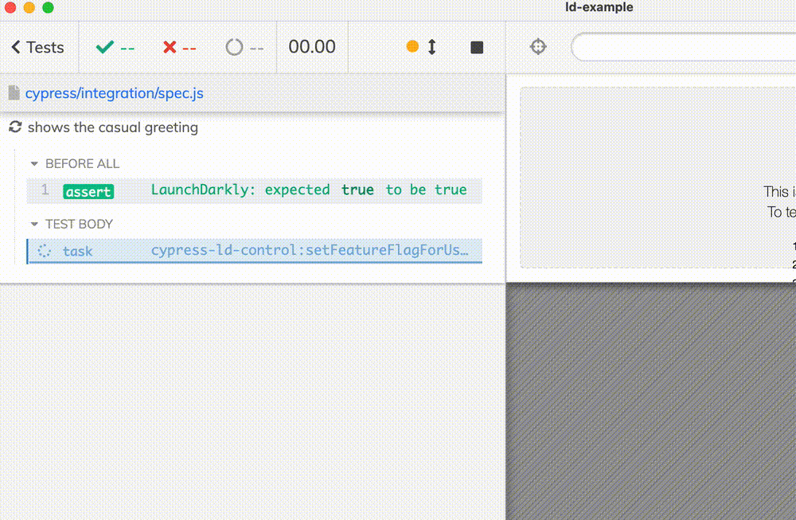
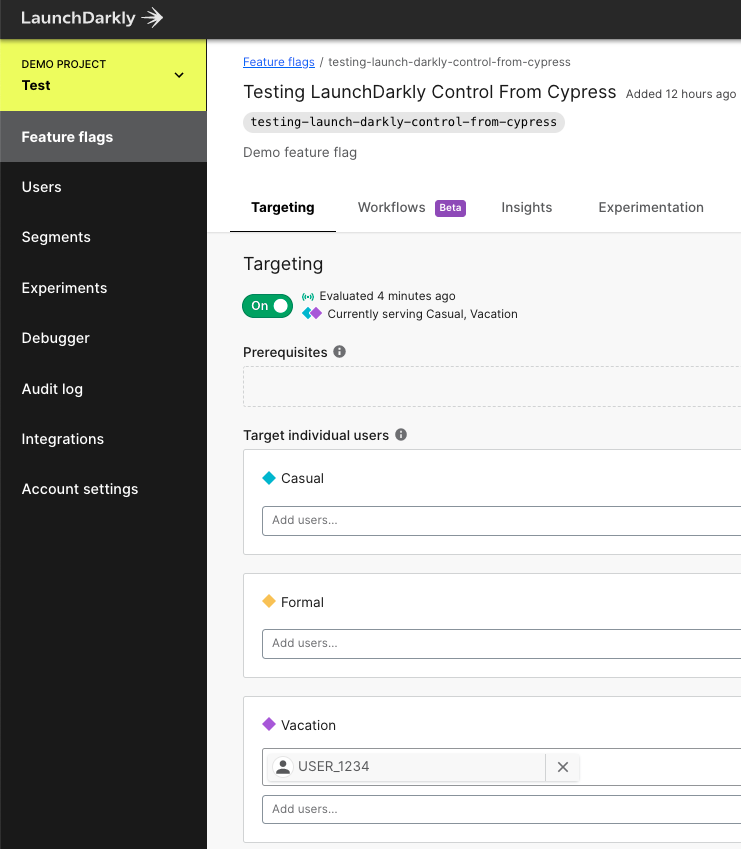

Let's say you are using LaunchDarkly to develop and test new web application features behind a flag. You have end-to-end tests too. How do you test the features behind the flag? In this blog post, I will show how to target features using individual user IDs. We will use the plugin cypress-ld-control to set the user ID as an explicit target for the experiment and then confirm the web application behaves correctly using Cypress test.
- LaunchDarkly project
- Demo React application
- Cypress setup
- The tests
- Cleaning up
- Inspecting a feature flag
- Running tests on CI
- Single test
- See also
- Bonus 1: control the feature lifetime
LaunchDarkly project
I have created a new LaunchDarkly project with project "Demo Project" and two environments. We will concentrate on the "Test" environment.
In the project, I have created a new String feature flag testing-launch-darkly-control-from-cypress with three variations.
Because we want to turn different flag variations for specific users, we will turn on the "Targeting" option. Currently there are no targets yet.
Demo React application
To demonstrate controlling the feature flags from Cypress tests, I grabbed a copy of the LD's React application. I got a copy using the degit command.
1 | $ npx degit launchdarkly/react-client-sdk/examples/hoc ld-example |
üéÅ You can find my version of the application used in this blog post in the repo bahmutov/cypress-ld-control-example.
I have changed the code to use my project's Client SDK ID and show the current greeting using the feature flag value. For the demo, I have passed a made-up user ID (in the real application, the user ID would be set after authentication step)
1 | import { withLDProvider } from 'launchdarkly-react-client-sdk'; |
My Home page uses the flag's value to show the greeting.
1 | import { withLDConsumer } from 'launchdarkly-react-client-sdk'; |
When I start the application, it shows the default causal greeting
Great. Let's target the user USER_1234 with a more formal greeting. At LaunchDarkly app, I will create a new targeting list. Don't forget to save the changes for them to be applied!
LaunchDarkly SDK includes real-time updates using server-side events, thus the Home page immediately changes to the formal greeting.
Nice, let's do the same from a Cypress test.
Cypress setup
Let's install Cypress test runner
1 | yarn add -D cypress |
We will need to control LaunchDarkly flags via HTTP calls. While you can make HTTP calls from Node and from Cypress easily, there is higher-level logic LaunchDarkly uses that makes implementing feature flag changes a chore. I have abstracted everything necessary to add individual user targets into a plugin cypress-ld-control that Cypress tests can use to avoid the complexity. Let's install this plugin and start using it.
1 | yarn add -D cypress-ld-control |
To change the flag values and add individual user targets, the plugin needs to access the LaunchDarkly REST API. We need to make an access token.
Let's load the plugin and create tasks for the Cypress tests to call using the cy.task - after all, cy.task is very powerful command.
1 | const { initLaunchDarklyApiTasks } = require('cypress-ld-control') |
Whenever we open Cypress locally or run on a continuous integration system, we need to provide two environment variables LAUNCH_DARKLY_PROJECT_KEY and LAUNCH_DARKLY_AUTH_TOKEN. The token is your private secret key we have just created. The project key is the unique string identifying each project shown in the URL and on the https://app.launchdarkly.com/settings/projects page.
Sensitive variables
You can store sensitive values and inject them as needed using my as-a CLI tool. In my case, I have .as-a.ini file that is never checked into source control
1 | ; https://github.com/bahmutov/as-a |
I open Cypress using the command as-a cypress-ld-control-demo yarn cypress open.
Starting the app and the tests
I typically use start-server-and-test to start the application and open / run Cypress tests. In my package.json file I have set up the command dev:
1 | { |
I run the application and inject the sensitive variables into Cypress tests using the terminal command
1 | $ as-a cypress-ld-control-demo yarn run dev |
For more, see video Start server and test.
Make LaunchDarkly optional
It is up to you to require these environment variables or gracefully handle it and only require them in some tests. For example, you could set an environment variable if the LaunchDarkly has been initialized:
1 | const { initLaunchDarklyApiTasks } = require('cypress-ld-control') |
In the test files that really need to call LaunchDarkly API we can check the variable once:
1 | before(() => { |
The plugin API
The "cypress-ld-control" plugin can be used by itself without Cypress to target users. When you initialize the ldApi object, it has the following methods: getFeatureFlag, setFeatureFlagForUser, and others, see README#API section. When using the plugin from Cypress specs, you need to call these methods via the cy.task command. To avoid clashing with other tasks, and conform to the cy.task semantics, the plugin follows the following rules:
- every task it returns is prefixed with
cypress-ld-control:string. Thus you to get the feature flag you would callcy.task('cypress-ld-control:getFeatureFlag')command. - every command takes zero or a single options object as an argument, for example:
cy.task('cypress-ld-control:setFeatureFlagForUser', ({featureFlagKey, userId, variationIndex})) - every command returns either an object or a null, never
undefined
The tests
For each experiment variation, I wrote a test placeholder to verify the application's behavior. In every test we can set the feature flag target that specific user, load the application, and check its behavior.
1 | before(() => { |
Let's start with the first test. Set the flag, load the app, confirm the user sees a casual greeting heading.
1 | before(() => { |

Similarly, the second test can target the user and confirm the second variant (index 1) is working as expected.
1 | it('shows formal greeting', () => { |
Finally, when on vacation, the greeting is relaxed
Note: you can see a flash of empty content while the application is fetching the features from LaunchDarkly. See LaunchDarkly docs on how to avoid it. For my simple application it was fine to have the flash.
Cleaning up
When the tests are finished, the last target for the user remains. We should clean up these targets to avoid adding more and more individual test users to LaunchDarkly. I am not sure, but it probably makes it slower to fetch the status for a particular user, and makes the web UI noisier. Let's remove any targeting after all tests are done.

1 | after(() => { |
Nice, the user target is automatically removed.
Note: the after hook runs even if any of the tests fail. The only reason it can be completely skipped is if the test runner crashes.
Inspecting a feature flag
If you are just interested in the feature flag and its variations, you can fetch the flag' state using the "cypress-ld-control:getFeatureFlag" task
1 | it('shows vacation greeting', () => { |
The entire feature flag object is quite large, as we see in the DevTools console. The highlighted variations are visible in the Command Log.
Running tests on CI
Let's use GitHub Actions to run the same tests on CI. I will use cypress-io/github-action to install the dependencies, cache Cypress, start the application, and run the tests. I will need to set the same environment secrets in the repo.
The CI workflow ci.yml uses the GH action and injects the secrets as environment variables.
1 | name: ci |
The terminal output on CI shows the messages from cypress-ld-control plugin as it calls LaunchDarkly API
Single test
Because LaunchDarkly client-side SDK includes real-time updates, we can write a single test that goes through every variation of the flag without visiting the page again or even reloading it.
1 | it.only('shows all greetings', () => { |
Note: the plugin "cypress-ld-control" handles LaunchDarkly rate-limiting, retrying API calls if the test runner receives 429 HTTP response code.
Note 2: in the test above you see a flash of "Hello, World" default flag state between the formal and the vacation greetings. The plugin automatically removes the current user target from a variation before adding it to another one (the same user cannot be target of two variations at the same time). Thus you see that brief moment between the remove and add commands.
See also
- bahmutov/cypress-ld-control plugin repo
- bahmutov/cypress-ld-control-example example app repo
- Test Feature Flags Using Cypress and Flagsmith
Bonus 1: control the feature lifetime
When someone introduces a new experiment behind the feature flag, one has to be careful not to break all existing tests. Here is what I think the feature lifetime should be:
- an experiment A new feature flag is added to enable the new behavior. At first, the developer is experimenting with the behavior, thus the feature is strictly opt-in. All existing users are seeing the existing default behavior. No updates to the tests are necessary.
- a prototype The new feature seems to be a success and has been given a go. Now the team is implementing it and is planning to release it. A few end-to-end tests are added that use the LD plugin to turn the feature on and test the new feature flow. All existing tests are still seeing the old behavior because the old behavior is the default one.
- an alternative In this stage, more and more users are seeing the new feature, and the old behavior will be removed in the future. We need to start thinking about the test changes. We now switch the existing tests to explicitly opt-in to turn the old behavior. So some tests opt-in and test the new feature, and other tests opt-in and test the new feature.
- the switch The feature is being turned on by default for most or all users. The tests written while developing the feature are now working without opt-in. The old tests are still running with opt-in to the old behavior.
- the removal The old behavior is removed and all old tests are disabled. The feature flag is now always pointing to the new behavior.